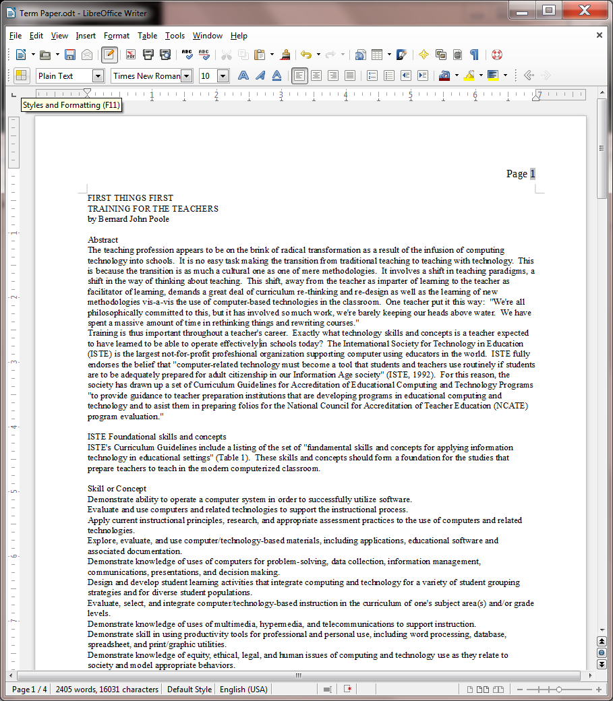
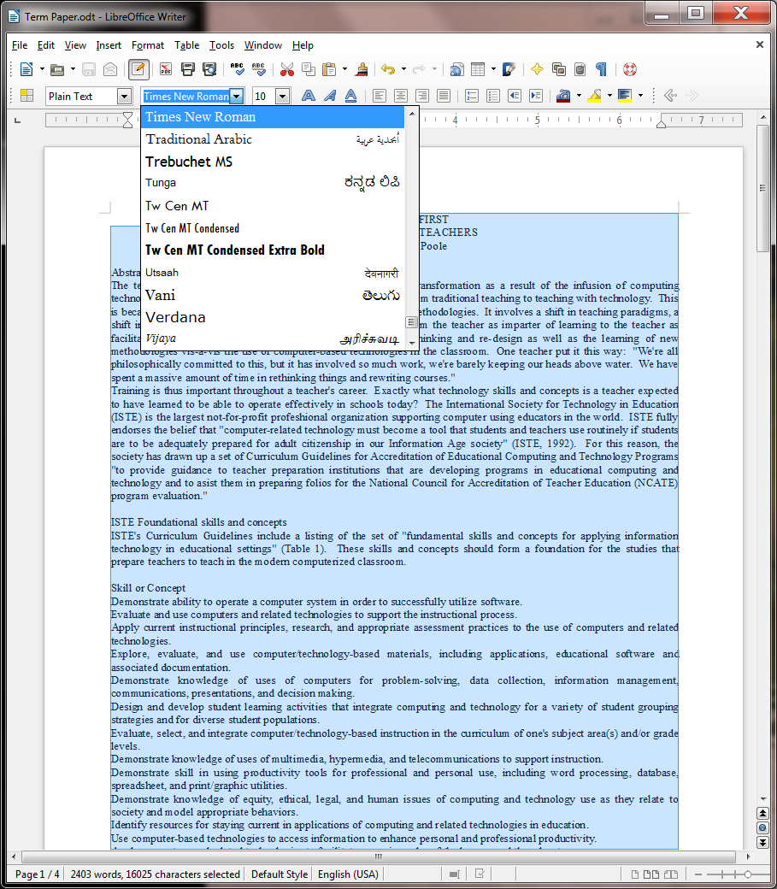
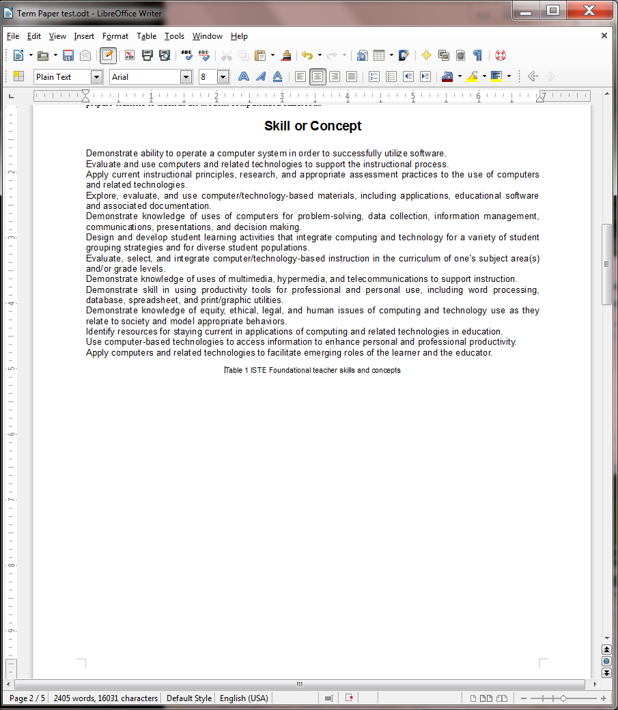
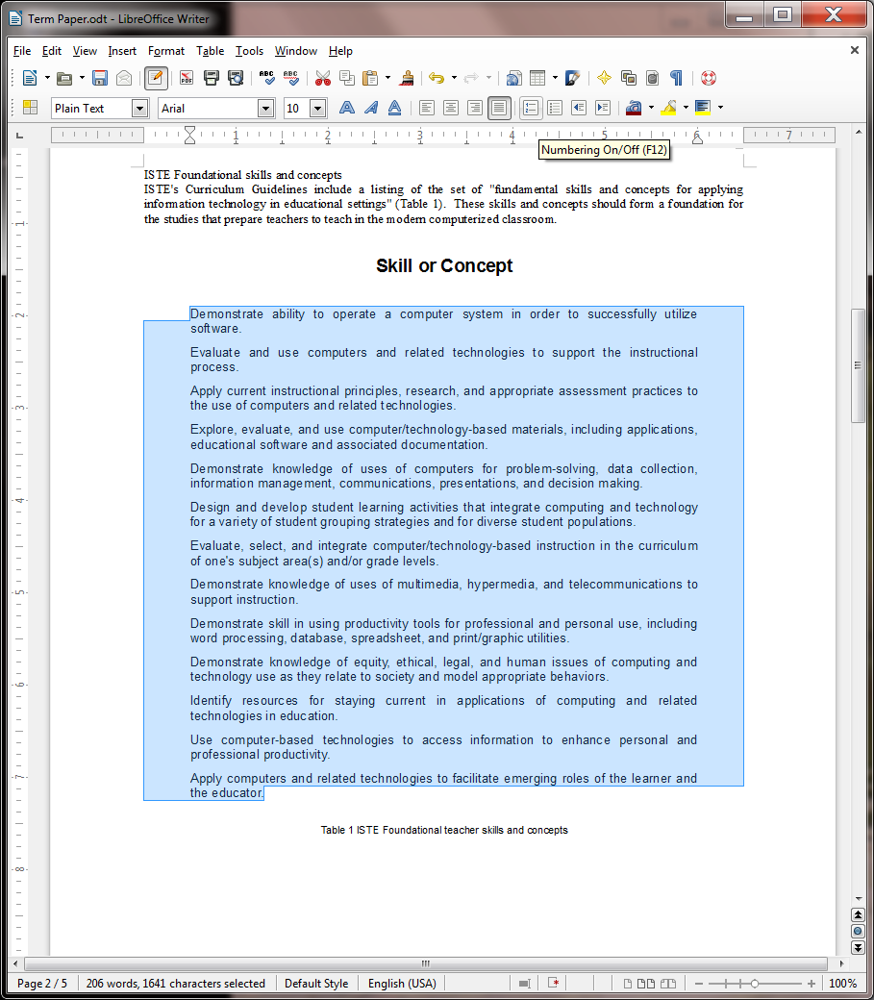
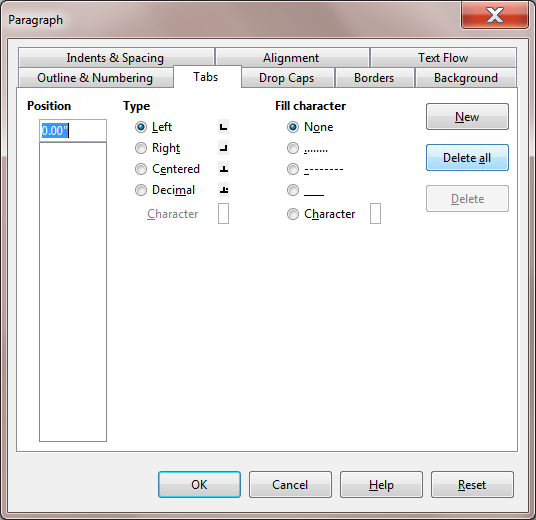
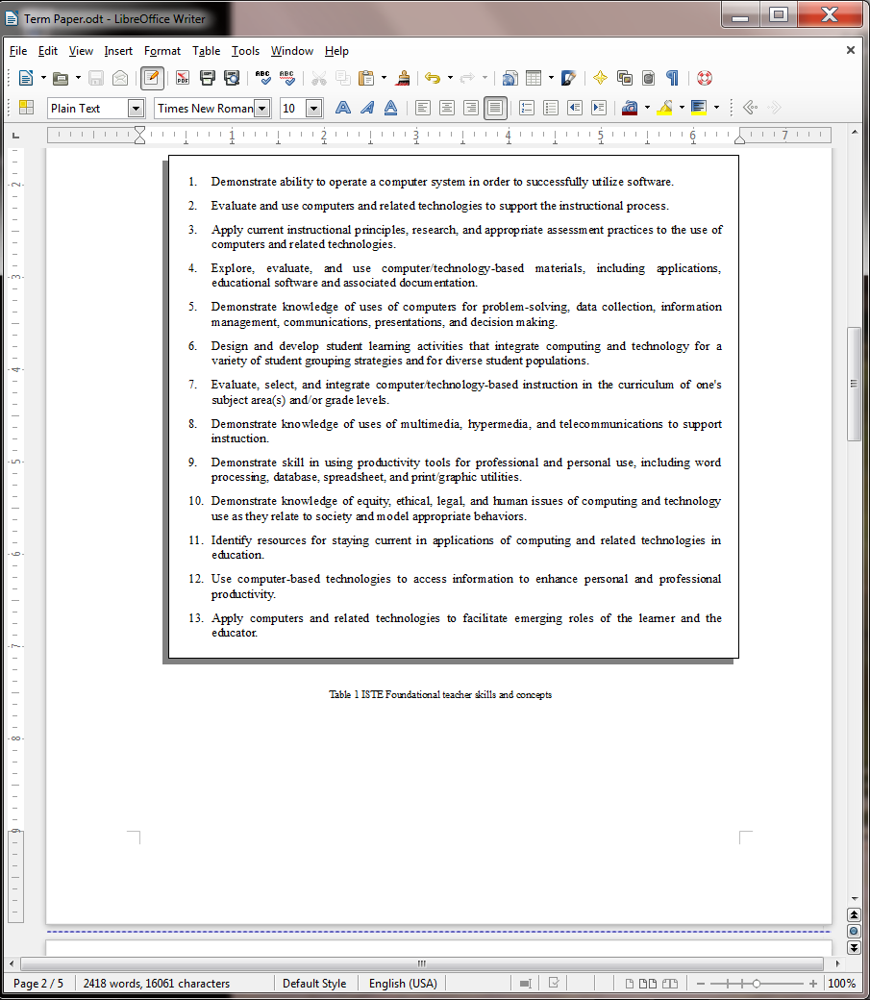
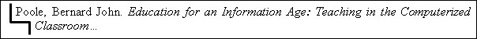
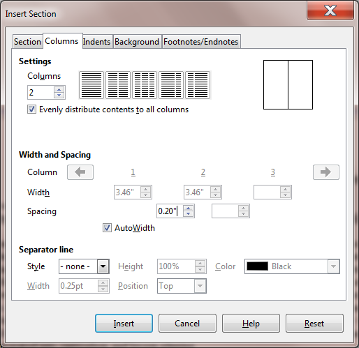
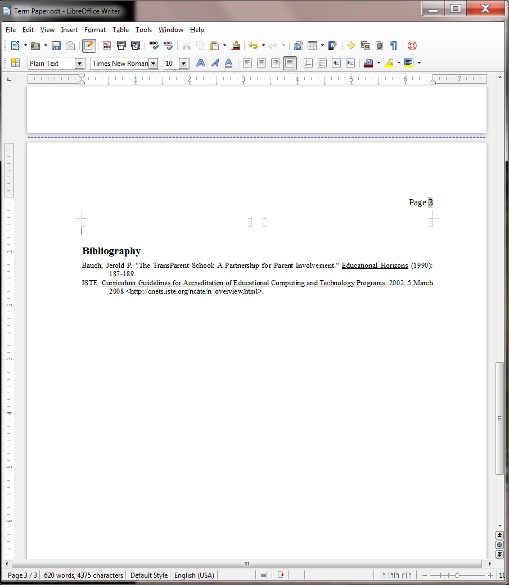

Lesson 2 More on Word Processing¶
2 More on word processing
Working with larger documents
LEARNING OUTCOMES
In this tutorial you will review what you learned in Lesson 1. Then you will be introduced to functions of Writer that are especially valuable when working with longer documents. Amongst these are the following:
- Inserting page numbers
- tools for formatting text
- bullets and numbered lists
- more on indenting text
- creating sections and columns of text
- finding and replacing text
- moving and copying text within a document
- setting off a block of text with a border
- adding graphics to a Writer document
Setting up for the tutorial
If you completed Lesson 1 of these tutorials, you can skip the rest of this section and proceed directly to the next section (Continuing with the tutorial, on the next page). If you did not complete Lesson 1, then you must do this now, before proceeding with the rest of Lesson 2.
The set of Work Files for LibreOffice ideally should be stored on a Flash drive (USB drive) in three folders named Base Files, Impress Files, and Miscellaneous Files. You need to create a fourth folder for the data files that you will be creating while working your way through the tutorials. This fourth folder will be called Data Files.
If you do not have these four folders and files ready, prepare them now before proceeding with this tutorial. Here are the steps to take:
First, Unzip the set of Work Files for LibreOffice by double clicking on the File name on your computer (your instructor will help you with this if you are working with a class) and Extract them onto your flash drive
Double click on the Work Files for LibreOffice folder to open it
Now, inside the Work Files for LibreOffice folder you need to create a new, fourth, folder called Data Files. Here’s how you do this.
In the Work Files for LibreOffice folder, select New Folder (Fig. 2.1).

Fig. 2.1 Creating a New Folder
The system will create a new folder for you and then wait for you to give it a name of your choice (Fig. 2.1 above).
Call the new folder Data Files
During the course of these tutorials you will be storing many files in this Data Files folder.
Continuing with the tutorial
This tutorial is designed to give you practice working with a longer document since this presents challenges that do not arise when dealing with documents that are no more than a page or two in length. Rather than have you type in a long paper of your own, the Work Files for LibreOffice come with a document prepared for the exercises in this tutorial.
Make sure you have the disk drive (your flash drive) containing your Work Files for LibreOffice in the computer, and Open the LibreOffice program
The name of the document you will be working with is Term Paper. You will find this document in the Practice folder which is inside the Miscellaneous Files folder of the Work Files for LibreOffice. Here are the steps to open it.
From the File menu select Open…, then, in the Open dialog box that pops up, scroll if necessary in the left hand frame of the dialog box in order to locate the Removable Disk icon—which is your flash drive—then click once on the icon in order to open it
Now, on your flash drive navigate to, and double click to open the Work Files for LibreOffice folder, then double click again to open the Miscellaneous Files folder
There are five folders in the Miscellaneous Files folder: Alphabet, Merge Documents, Other Documents, Practice, and Templates. The document you are going to use for this set of exercises is in the Practice folder.
Double click on the Practice folder to open it, then double click on the document Term Paper and wait while Writer opens it
You are going to make lots of changes to this Term Paper document, including fixing grammar and spelling errors that have been purposefully introduced. But you do not want to lose this original version of the Term Paper, so you need to save it somewhere else on your flash drive. The ideal place will be in your Data Files folder amongst your Writer Documents, as you did for Lesson 1.
In the File menu select Save As, then, in the Save As dialog box, scroll if necessary in the left hand frame to locate the Removable Disk icon—which is your flash drive—then click once on the icon to open it
Now navigate to, and double click to open the Work Files for LibreOffice folder, then double click again to open the Data Files folder
Finally, double click to open the Writer Documents folder and click on Save
As you are working your way through this tutorial, you can now safely hit Ctrl-s to save your work as you go along. Every time you save the Term Paper document, you will be replacing and updating the version that is in your Data Files folder. The original document, which is in your Miscellaneous Files folder, will remain untouched.
You are ready to begin work.
2.1 INSERTING PAGE NUMBERS
It would be useful to insert page numbers in the Term Paper for easier reference as you work your way through the remainder of this tutorial. You should insert page numbers in either the header or the footer of your document. Writer takes care of keeping the numbers sequenced as your page numbering changes.
First, click in the header section of the first page of the Term Paper document, above the first line (First Things First), to open the Header, then click on the light blue Header box that pops up on the page (Fig. 2.1)
Fig. 2.2 The Header section on Page 1 of the Term Paper document
This will open a header on every page of the document, which will allow you to put a page number up there. Notice that the cursor is waiting at the left hand edge of the header section.
Next, type the word Page followed by a space, then in the Insert menu select Fields > Page Number (Fig. 2.3)
Fig. 2.3 Inserting page numbers into the header of a document
You now have a page number (Page 1) in the header at the top left of the page (Fig. 2.4).
Fig. 2.4 Inserting a page number into the header of a document
Scroll down to pages two, three and four and notice that there is a page number there, too, with the same format. If there were 200 pages in the document, every page would now have an appropriate page number in the same format.
The only other change you’re going to make is to move the page number over to the right hand side of the header. This is simple enough to do because you only have to do it to the page number on any one of the pages for the change to occur throughout the document.
First, make sure the cursor is still in the header at the top of one of the pages
In the Formatting toolbar there are four text alignment tools—one for left alignment, another for center alignment, another for right alignment, and a fourth for justified alignment (where the text is aligned with the margins on both side of the page) (Fig. 2.5).
Fig. 2.5 The Text Alignment tools in the Formatting toolbar
In the Formatting toolbar click on the Right alignment icon, then save your work (Ctrl-s)
That’s all there is to it. Now check every page again and make sure the page numbers there are aligned on the right as well.
If you wanted to start a document at some page number other than 1 you would click anywhere in the first paragraph of the document, then in the Format menu select Paragraph… to bring up the Paragraph dialog box (Fig. 2.6).
Fig. 2.6 The Paragraph dialog box showing the Text Flow settings
Say you wanted to start the page numbers at page 12 (because your document is in two parts, for example, the first part being 11 pages long). In the Paragraph dialog box > Text Flow > Breaks options (check Fig. 2.6 above) you would click in the boxes next to Insert and With Page Style and then in the Page Number entry box you’d type the number 12, and click on OK. Simple as that!
Another page numbering option, which you will apply to your Term Paper document here, is to NOT have a page number on the first page of the document. This is a common practice, especially in longer documents. Let’s do this now.
Start by clicking anywhere in page 1, then click, in the Formatting toolbar, on the Styles and Formatting icon (Fig. 2.7)

Fig. 2.7 The Styles and Formatting icon in the Formatting toolbar
This brings up the Styles and Formatting dialog box (Fig. 2.8).

Fig. 2.8 The Styles and Formatting dialog box
In the Styles and Formatting dialog box, click on the Page Styles icon (Fig. 2.8), then, in the list of Page Styles, double click on First Page
Close the Styles and Formatting dialog box, and scroll through the document to check that the page number now appears only on the second and subsequent pages—there should be no page number on page 1
Now you’re ready to learn about more tools for formatting text.
2.2 MORE TOOLS FOR formatting text
A word about default settings
Your installation of Writer has default settings for the typical printed page. The normal margins are set at 0.79”, top and bottom, left and right. The normal spacing between lines is single spaced. The default alignment is left (the text is aligned to the left margin). The default number of columns on the page is 1, and the default color of the text is black on a white background. The font selected for the Term Paper document is Times New Roman and the size of the characters throughout is 10 point (because that is how it was saved in the Practice Files folder)*. *
In general, there is no point changing these settings unless they are unsatisfactory. But you can reset any of the format options to meet your needs. The exercises that follow will give you the opportunity to practice doing this as you reformat the Term Paper document.
A word about WYSIWYG
WYSIWYG (computerese, pronounced “wizzywig”) is an acronym for “What You See Is What You Get.” It is used to describe computer systems such as the one you are using, where the appearance of a document on the screen is what you will get on paper when you print it out. As you make formatting changes to your document, they will show on the screen so that you can visually check the effect of the changes before printing.
Setting the margins
First, you need to reset the margins to 1” all round. The easiest way to change any of the four margins on a page is in the Page Style dialog box.
In the Format menu select Page… to bring up the Page Style dialog box, then click on the Page tab (Fig. 2.9)
Notice that the Page Style dialog will allow you to make various changes to the page style, including the Paper format (the paper size and orientation and so forth). All you need to change is the margins.
Fig. 2.9 The Page tab in the Page Style dialog box
Change each of the four Margins settings to 1.0” then click on Apply and click on OK
Remember that you can use the Page Style dialog box to change the margins on your printed page.
Aligning text
Justified text
When you align text on both margins, called justified text, both sides of your text run flush with the right and left margins. Seeing is believing, so carry out the steps that follow to see the effect of this option. First you need to select the entire document so that you can set justified alignment from page one to the last page of the document. This takes a second.
In the Edit menu choose Select All (or simply press Ctrl-a) to highlight the entire Term Paper document
Remember, if you make a mistake, it’s not a problem! You can undo whatever you did by selecting Undo from the Edit menu or just hit Ctrl-z). And you can do this multiple times to step back to a point where you want to resume your work.
Now, with the entire document highlighted, click on each Text Alignment tool in turn and scroll up and down in the document so you can see how your text looks each time you change the alignment
You want the final version of the document to be justified, so finish this exercise by clicking on the icon for Justified text (aligned on both margins—the last of the four alignment icons highlighted in the Formatting toolbar)
Now click anywhere on the Term Paper document to deselect the highlighted text, then Save this updated version of the Term Paper in your LibreOffice Work Files > Data Files > Writer Documents folder (or simply hit Ctrl-s)
Notice that the margins on both sides of the screen are now aligned to be flush with the left and right margins except lines that do not reach all the way across the page (such as the title lines and some of the lines at the end of paragraphs).
Centered text
Centered text stands out on a page and is often used for titles. The following exercise steps you through the process of centering the titles on the first page of the Term Paper document.
First, if necessary, scroll all the way back to the beginning of the Term Paper document
Now, highlight all 3 Title lines at the top of the first page (down to and including the author’s name)
In the Formatting toolbar click on the Centered alignment icon
After you have centered the title lines, click anywhere in the text of the document, then once again save your work in progress (Ctrl-s)
Choosing font faces
Font faces come in all shapes and sizes, and you probably have several dozen available to you on your computer. Times New Roman font comes standard with all computers, so the text displayed on your screen is almost certainly in this font since the Term Paper document was saved with this font.
Times New Roman is a serif font, which means it has serifs.[^1] Serifs are the small marks (flourishes) used to complete a letter (Fig. 2.10).
Fig. 2.10 Serif (Times) and sans serif (Arial) font faces
A sans serif font doesn’t have these flourishes, as you can see if you look closely at a font such as Arial (Fig. 2.10 above).
In general, serifs improve readability by increasing the definition of letters. However, the clean lines of sans serif fonts can prove easier to read in some contexts, especially, for example, with larger font sizes. Sometimes you may need to set off one font against another (as in these tutorials) so sans serif fonts such as Ariel and Comic Sans MS will often come in handy.
It will be useful for you to practice changing fonts. This will also give you the opportunity to discover the wide variety of fonts you can use.
From the Edit menu choose Select All (or Ctrl-a) to highlight the entire Term Paper document
In the Formatting toolbar, click on the down arrow next to the Font Name tool (Fig. 2.11 next page) to drop down the list of available fonts on your computer
Click on any of the fonts in the Font menu and you wil be able to see how the font will look if you were to select it for the Term Paper
Do this again for several different fonts. Each time, check the letters carefully to see what type of font you have chosen. Is the font you chose serif or sans serifs? Do you like any particular fonts? Which is your favorite font?

Fig. 2.11 The menu of available fonts
Very important: For the sake of this tutorial you need to set the entire Term Paper document to Times New Roman font after you have finished checking out some of the many fonts available with Writer. This is because the relative sizes of fonts may create variations in the page numbers of the Term Paper document we’re working with, and this may affect the directions for the rest of the tutorial.
Select All (Ctrl-a) and choose the Times New Roman font) to return the document to Times New Roman font, then Save (Ctrl-s) the document again
Now you are going to choose a different font just for the table on page 1 of the Term Paper document. The Table begins about half way down the page with the header: Skill or Concept and ends with the caption: Table 1 ISTE Foundational teacher skills and concepts.
First, click anywhere in the Term Paper document to deselect any highlighted text and scroll, if necessary, to page 1
Use the mouse and drag to select all the items in the table on page 1—from the Title: Skill or Concept down to the end of the caption:Table 1 ISTE Foundational teacher skills and concepts
Now select Arial as the font for the text in the table, click anywhere to deselect the table text and Save your work (Ctrl-s) before you move on
Changing the point size of text
The size of fonts is measured in points.
9 point is quite small;
12 point is standard;
36 point is quite large.
The smallest font size is 4 point (tiny); the largest possible font size is 255 point (huge!). The font size for the body of the Term Paper document can be left at 10 pt. But it would be interesting to use a larger font size for the Title lines and we will also need to reduce the font size for the text in the Table which will end up on Page 2 after we’re done with the following exercises. Let’s start with the Title lines.
Go to the beginning of the Term Paper document and highlight the first Title line on the first page: FIRST THINGS FIRST, then In the Formatting toolbar use the Font Size tool to select 36 pt (Fig. 2.12)
Fig. 2.12 Changing the size of fonts
Now there’s a headline for you! Complete this exercise by changing the size of the remaining Title lines as follows:
Make the second line of the title (the sub-title) 24 pt and make the author’s name 18 pt and Save your work (Ctrl-s)
Inserting Page Breaks
It is often the practice to keep an Abstract on a page by itself, ahead of the main body of a paper. So, for this exercise you are going to set a page break after the Abstract.
Still on page 1 of the Term Paper, click to position the cursor at the beginning of the line: “ISTE Foundational skills and concepts” (about half way down page 1)
Now, in the Insert menu select Manual Break…
This will bring up the Insert Break dialog box (Fig. 2.13).

Fig. 2.13 The Insert Break dialog box
Notice that the Page Break option is selected by default, so click on OK
Scroll up and down between pages 1 and 2 so that you can see how the Page Break worked
Notice that Writer moves the “ISTE Foundational skills and concepts” section to a new page following the Abstract. Thus the Abstract will now print on page 1 by itself, following the title lines.
Practice makes perfect
Let’s try this again by inserting a Page Break immediately before the text which follows the Table of ISTE Foundational teacher skills and concepts. Here again are the steps to do this:
Position the cursor just about half way down page 2 of the document, at the beginning of the line that reads “It will be useful to examine...” (that’s the line that follows the table caption: “Table 1 ISTE Foundational teacher skills and concepts”)
Insert a Page Break here, too (Insert menu > Manual Break… and click on OK to accept Page Break)
One last task before you move on. You are going to increase the font size of all the text that is now on pages 3 thru 5 of the Term Paper document.
Position the cursor at the top of page 3 (immediately before “It will be useful…”, then scroll to the last page of the document (page 5), and hold down the Shift key while you click at the end of the Bibliography section—the end of the Term Paper document
Now with the contents of pages 3-5 highlighted, change the font size of the text from 10 to 12
Save your work (Ctrl-s)
Changing the layout of the Skill or Concept table
There are some formatting changes you need to make to the Skill or Concept table which is now on Page 2. When you are done, it will have a similar layout to Fig. 2.14.

Fig. 2.14 ISTE table after the first set of updates
Scroll back to page 2, if necessary, and highlight the title of the table (Skill or Concept) by dragging across it (or triple click on it)
In the Formatting toolbar, click on the center alignment icon
With the title of the Table still highlighted, use the Font Size tool to make 14 pt the font size of the table Title, and, still in the Formatting toolbar, click on the Bold icon (Fig. 2.15), then click at the end of the title to put the cursor there and hit the Return/Enter key once to space the table’s contents down from the Title line
Fig. 2.15 The Bold icon in the Formatting toolbar
Now highlight the caption at the end of the table (Table 1 ISTE Foundational teacher skills and concepts), center it and change its font size to 8 pt
Finally, click to position the cursor at the beginning of the caption, right before Table 1 ISTE… and hit the Return/Enter key once to space the caption down from the table
At this point the Skill or Concept table on Page 2 of the Term Paper document should look like Fig. 2.14 on the previous page.
Save your work (Ctrl-s) before you move on
Spacing before and after paragraphs
Make sure that you can still see all of the Table of ISTE Foundational skills and concepts on page 2 of the document
Sometimes it is easier to read a list of items if they are slightly separated one from the other by what is called white space (the parts of a page where there is no text). Let’s do this next.
Drag with the mouse to select (highlight) all the items in the BODY of the table (from Demonstrate ability... at the beginning of the table to …roles of the learner and the educator at the end of the table—NOT including the caption)
Now, in the Format menu select Paragraph…, to bring up the Paragraph dialog box and click on the Indents & Spacing tab (Fig. 2.16)
Fig. 2.16 Paragraph dialog box
Change the Spacing > Below Paragraph: setting to 0.05”, click on OK, then click anywhere in the text to remove the highlighting (to deselect it) and save your work up to this point (Ctrl-s)
Notice how much easier it is now to pick out each of the items in the Skill or Concept table.
2.3 BULLETS AND NUMBERED LISTS
Numbered lists
For the next exercise you are going to use the Bullets and Numbering Styles in Writer to number each of the items in the Table of ISTE Foundational Teacher Skills and Concepts on page 2 of the Term Paper document.
You can use any of several numbering and bullet styles. But let’s keep it simple for now.
Once again, highlight all the items in the body of the table (from Demonstrate ability... to …roles of the learner and the educator)
In the Formatting toolbar, click on the Numbering On/Off tool to quickly number each of the items in the Table (Fig. 2.17)

Fig. 2.17 The Numbering On/Off icon in the Formatting toolbar
Click anywhere to deselect the highlighted Table, then Save your work again (Ctrl-s)
At this stage, the Table should look much like the illustration in Fig. 2.18.
Fig. 2.18 The numbered list of Skills and Concepts
Notice the hanging indents for each item in the table. Writer uses a hanging indent so that the numbers stand out. We’ll return to the subject of hanging indents later in the lesson, where you will practice creating them yourself.
You can also start numbering from a number other than 1. You would need to know how to do this, for example, if you broke up a numbered list into two sections with text in between that is not numbered. If you wanted to start numbering from a number other than 1, you would do this by selecting the Format menu > Bullets and Numbering… and, in the dialog box that pops up (Fig. 2.19), you would click on the Options tab and, in the Start at: box type the starting number you want for the list of items you are working with.
Fig. 2.19 Settings for Customizing a Numbered List
For our purposes, however, we want to start at 1, so make sure the Start at: value is 1 (don’t change a thing) and click on OK
Bulleted lists
If you wanted bullets instead of numbers, you would select the Bullets On/Off tool, which is right next to the Numbering tool in the Formatting toolbar (Fig. 2.20).
Fig. 2.20 The Bullets On/Off tool in the Formatting toolbar
There are several styles of Bullets that you can choose in LibreOffice, and you can check them out by selecting Format menu
Bullets and Numbering… and, in the Bullets and Numbering dialog box that comes up, you would select one or other of the bullets styles that show in the Bullets tab (Fig. 2.21).
Fig. 2.21 Bullet styles dialog box
Did you save your work? Hit Ctrl-s before you forget…
2.4 SETTING OFF A BLOCK OF TEXT WITH A BORDER
The ISTE Table should now be starting to look more like a table! Let’s make one more update to set off the table as a separate item from the running text of the Term Paper.
Sometimes, for emphasis or effect, it looks professional to set off a section of a document with a border or frame.
You are going to do this to the Table of ISTE Foundational Teacher Skills or Concepts on page 2. It will end up looking something like Fig. 2.22.
Fig. 2.22 ISTE Table with a border
Once again highlight the contents of the body of the Table (the 13 numbered Skills and Concepts, NOT including the centered Table Title (Skill or Concept) at the top, or the centered caption (Table 1 ISTE, etc.) at the bottom
Now, in the Format menu, select Paragraph… to bring up the Paragraph dialog box and click on the Borders tab (Fig. 2.23)

Fig. 2.23 The Borders tab in the Paragraph dialog box
Use Fig. 2.23 above carefully to make sure you select the correct settings for the table Border:
Click on the 2^nd^ Line arrangement button to Set All Four Borders
In the Spacing to contents section, make sure each of the values is 0.20”
In the Shadow style section select the 4^th^ option to put the shadow at lower left of the table
Now click on OK, then click anywhere in the document to remove the highlighting so you can see the effect of the changes you have made to the ISTE Table on Page 2 of the Term Paper document—it should look much the same as Fig. 2.22 on the previous page
Save your work again (Ctrl-s) and take a break!
2.5 USING TAB STOPS
Inserting Tab Stops
Let’s take a short break from the Term Paper exercise and learn about Tab Stops in general. No need to close the Term Paper document, though, because you still have plenty of work to do with it, including setting some tab stops here and there. To practice using tab stops, you’ll be using a new blank document.
From the File menu select New > Text Document, and wait while a Blank Writer Text Document opens
Tabs are very useful for lining up text in columns, as illustrated in Fig. 2.24.
Andrew Freshman 186 90.35
Mary Senior 95 85.50
Teresa Sophomore 87 87.90
Bernard Senior 210 100.00
Josephine Junior 123 78.25
Fig. 2.24 Typical columnar organization of data
In the table in Fig. 2.24 the first column has a list of names aligned left. The second column has a list of academic year designations which are centered on the column. The third column has whole numbers which are usually aligned right. Finally there is a column of decimal numbers which are aligned around the decimal point.
If you have never used Tab Stops before, you may find them confusing. The exercise that follows will help you understand what Tab Stops are all about and how they work.
The purpose of Tab Stops is to help you align data, often in columns, like in the table above. One thing you should never do in a word processor is try to line data up using the space bar; this is a surefire recipe for getting things out of line because of the way modern word processors use relative spacing for the characters in a line or on a page*. *
Notice the Tab selector icon at the left edge of the Ruler bar—top left corner of the Writer window. It looks like the capital letter L (Fig. 2.25) because the default tab selector icon is for left alignment.
Fig. 2.25 The Tab selector icon to the left of the Ruler bar
This means that, if you click anywhere along the Ruler bar to set a Tab Stop while this tab icon is selected, a left Tab Stop will be set at that place in the ruler. If you use the Tab key on the keyboard to tab across to that Tab Stop, you will be left aligned on it, and any text you type will proceed from the left of the Tab Stop to the right.
The best way to understand this is, of course, to do it, so here goes. Put your thinking cap on, OK? First thing you need to do is remove/clear any existing tab stops that may already be inserted along the Ruler bar of your blank document. Here’s how you do this.
In the Format menu select Paragraph…, then in the Paragraph dialog box that pops up, click on the Tabs tab (Fig. 2.26), and click on Delete all

Fig. 2.26 The Tabs/Delete all option in the Paragraph dialog box
You are going to put four different Tab Stops along the Ruler bar. Fig. 2.27 shows the Tab Stops you should end up with for the correct alignment of the data in the table illustrated in Fig. 2.24 on page 48 above.
Fig. 2.27 Tab settings for the table in Fig. 2.24 (page 48 above)
Try the following to see how to select some of the commonly used Tab Stops before using them to align data on a page of text.
Click once on the Tab icon button in the top left corner of the screen, and you’ll see the icon change to the icon for centering text on the Tab Stop (it looks like an upside down ‘T’ and indicates that text aligned on it will be centered on it and move to either side of the Tab Stop, left and right, as you type)—it’s the second Tab Stop in Fig. 2.27
Click again (a second time) on the Tab icon button and you’ll see the icon for right alignment (this Tab Stop looks like a backwards ‘L’, indicating that text aligned on it will go to the left of the tab stop because it’s aligned from the right—if you’ve never used Tab Stops before, that must sound confusing, but you’ll see how it works in a minute when you complete the exercises that follow)—the right alignment Tab Stop is the third one along the ruler in Fig. 2.27
Finally, click again (a third time) on the Tab icon button and you’ll see the icon for decimal alignment (this Tab Stop looks like an upside down ‘T’ with a dot to denote the decimal point—this is for decimal numbers, like dollars and cents, for example, and makes sure everything is lined up on the decimal point)—check the decimal alignment Tab Stop on the right hand side of Fig.2.27
If you continue clicking on the tab icon button, you’ll see other Tab Stops and indent markers. You won’t need these for this exercise.
Your task is to reproduce the table illustrated in Fig. 2.24 on page 48 above. You’ll need to begin by setting the four Tab Stops as they are illustrated in Fig. 2.26 above.
Click on the Tab icon until you see that the left Tab Stop is selected, then click once at the 1” hash mark on the ruler
Click again on the Tab icon until you select the center Tab Stop and click once at the 2 ½ ” hash mark on the ruler
Click again on the Tab icon until you select the right Tab Stop and click once at the 4” hash mark on the ruler
Finally, click on the Tab icon until you select the decimal alignment Tab Stop and click once at the 5” hash mark on the ruler
Now, with the Tab Stops in place, you can start to enter the data from the table in Fig. 2.24 on page 48 above.
First, make sure the cursor is still waiting at the left edge at the top of the blank page
Hit the Tab key to move the cursor across to the first tab, and enter the first name in the table (Andrew—which will be left aligned on the tab stop)
Hit the Tab key again, and enter the class that goes with the first name (Freshman—notice how it is centered on the Tab Stop as you type it)
Hit the Tab key again, and enter the rating value that goes with the first name (186—again notice how it is right aligned on the Tab Stop)
Hit the Tab key again, and enter the test score that goes with the first name (90.35—and notice how the value is aligned on the decimal point)
Continue in this way until you have entered all five (5) lines of data in the table
Removing Tab Stops
To remove a Tab Stop, you need to position the tip of the mouse pointer on the Tab Stop marker and drag the Tab Stop down off the ruler. When you release the mouse button the Tab Stop will be gone. This is tricky to do if you’re not used to it because the Tab Stop is small and you have to be very careful to use just the tip of the mouse pointer. Try this for yourself.
Position the cursor anywhere on the first line of the student records, then position the tip of the mouse pointer on each of the Tab Stops one by one and drag the stop down below the ruler, then release the mouse button to throw it away
This will mess up the layout of the data in that first line, but that’s OK for now since you’re just practicing.
Now undo what you just did by pressing Ctrl-z four times
You can also remove all the Tab Stops at one time. You already did this at the beginning of this exercise (see Fig. 2.25 on page 49 above), but here’s a reminder of how you do this.
Click anywhere on the first student record and then double click on any one of the Tab Stops
This brings up the Paragraph dialog box.
Now, in the Paragraph dialog box, click on the Tabs tab, then click on the Delete All button
There! All the Tab Stops are gone for that particular student record. To clear the Tab Stops for ALL the student records in one go, simply highlight all the records (Ctrl-a), double click on one of the Tab Stops in the ruler, and in the Paragraph > Tabs dialog box click on Delete All.
Now Close the Untitled document and don’t Save it; this was just an opportunity for you to practice how to use Tab Stops
**2.6 STYLE OF TEXT AND LINE SPACING **
Text Styles
When writing, it is often important to draw attention to certain words or phrases by adding emphasis to them. This can be accomplished by boldfacing, italicizing, or underlining the text.
These options are available from the appropriate icons in the Formatting toolbar (Fig. 2.28).

Fig. 2.28 Text style icons in the Formatting toolbar
Alternatively, you can apply the styles using Quick Keyboard cCommands: Ctrl-b for Boldface, Ctrl-I for Italics, and Ctrl-u for Underline.
Boldface
Titles and sub-titles should stand out on a page. Increasing the size certainly helps. Using all capital (uppercase) letters can also add emphasis and draw the eye of the reader. You have seen both of these techniques applied to the Titles at the top of the first page of the Term Paper document.
Boldface also will improve the appearance of the three section headers (Abstract, ISTE Foundational skills and concepts, and References) and make them stand out on the page. While you’re at it, you might as well incease the font size, too.
Scroll to Page 1, highlight the Abstract header and make it boldface (Ctrl-b) and increase the font size to 14 pt
Now apply boldface and 14 pt font size to the two other section headers (ISTE Foundational Skills & Concepts at the top of Page 2 and Bibliography on page 6)
Save your work (Ctrl-s)
Underline
On page 2 of the Term Paper document (the page after the Abstract) we have the table of the 13 ISTE Foundational teacher skills and concepts. Following this table, on pages 3 through 6, each skill or concept is taken one by one for further explanation.
Your task is to underline the skill or concept at the beginning of each of the 13 sections on pages 3 through 6. When you do this, you will underline just the words that describe the skill or concept; do not include the number of the concept—so you’ll underline just the line or two of words immediately after the number that states the skill or concept.
Fig. 2.29 illustrates what you need to do.
Fig. 2.29 Underline only each of the Skills or Concepts from the Table on page 2
Here is a step-by-step explanation of how to do the first one.
Scroll to the beginning of page 3 and, in the first skill or concept, click to put the cursor immediately before the T of “Teachers...“
Now hold down the Shift key and at the same time click at the end of the skill or concept (i.e. after the period at the end of the word “...software.”) to highlight the text of the skill or concept, and press Ctrl-u to underline the skill or concept
That’s all there is to it. Go ahead now and underline the remaining 12 skill or concept section titles. When you have finished this exercise, the underlined section titles will look as illustrated in Fig. 2.29 above.
Don’t forget to save your work when you’ve finished underlining
Italics
Your next task is to italicize the author’s name on the first page. You can probably figure this out for yourself, but just in case you need help, here are the steps.
Select the author’s name under the title on the first page of the Term Paper and press Ctrl-I, then save your work again
Line spacing
Papers may be printed with variable spacing between lines. The following steps show you how to do this in Writer.
Select the entire paper by pressing Ctrl-a (Select All)
Now from the Format menu select Paragraph…, then, in the Paragraph dialog box click on the Indents and Spacing tab
Click on the arrow at the end of the line spacing box (Fig. 2.30) and select Double for the spacing option, then click on OK
Fig. 2.30 Line Spacing in the Paragraph dialog box
Your document was set in single spacing when you loaded it from the Work Files for LibreOffice. Double spacing is required for many written documents and now you know how to do this using Writer.
For the sake of this exercise, however, be sure to return the document to single spacing (Ctrl-a > Format menu > Paragraph… > Indents and Spacing tab > Line spacing
Single > OK)Now press Ctrl-s to save your work to date
2.7 INDENTING TEXT
Adjusting (moving) the Indent Markers
You practiced doing this in Lesson 1, but maybe you need more practice since these indent markers can be tricky to apply.
There are two indent markers on the left side of the Ruler bar, one above the other, as illustrated in Fig. 2.31. The First Line Indent marker is on top, the Left/Hanging Indent marker is on the bottom.

Fig. 2.31 The indent markers in the Ruler bar
The indent markers establish where text is aligned in relation to a paragraph as a whole. The First line Indent marker (it looks like an upside down triangle) is applied only to the first line of a paragraph. The Left Indent/Hanging Indent marker control the margin for all the lines after the first line in a paragraph.
Carefully examine Fig. 2.31 to clearly identify each indent marker before proceeding with the tutorial
Tip #1: Remember that the tip of the mouse arrow is the hot spot. Moving the small indent markers is a precise task, so be sure to position the tip of the mouse arrow on the indent marker that you want to move.
Tip #2: When you drag on the Left/Hanging Indent marker (Fig. 2.29 above) both of the markers move together. When you drag on the first line indent marker, which is above them, it moves on its own, leaving the First Line/Hanging Indent marker in place.
Traditionally, an indent is commonly used for the first line of paragraphs—where the margin is set in a few spaces from the rest of the paragraph (Fig. 2.32A).
Fig. 2.32A Fig. 2.32B
Then there is the indent for a list such as a bibliography—where you set the margin for the first line back a few spaces from the rest of the paragraph. Writer refers to this latter indent as a “hanging indent” because the lines that follow look as if they are hanging off the first line (Fig. 2.32B).
The Term Paper document that you have open on the screen would benefit from the use of both types of indent markers.
Indenting the first line of paragraphs
Right now in the Term Paper document it is difficult to tell where one paragraph ends and another begins. Let’s indent the first line of the paragraphs in the Abstract so you can see what a difference this simple change makes.
Click at the beginning of the first line of the first paragraph of the Abstract on page 1 (immediately ahead of the words “The teaching profession…” at the beginning of the next line after the Abstract header)
Hold down the Shift key and click again at the end of the Abstract, to highlight all the Abstract text
Now, on the left side of the Ruler bar at the top of the document, position the tip of the mouse arrow on the First Line Indent marker (the upper marker) (see Fig. 2.31 on the previous page), and drag this First Line Indent marker to the right a ½ inch (to the ½” hash mark), then click anywhere to remove the highlighting
Notice how Writer indents only the first line of each of the two paragraphs in the Abstract. This makes it easier to tell where one paragraph begins and another ends.
Pages 3 through 6 of the Term Paper document have 13 numbered sections which discuss each of the skills or concepts in the Table on page 2. In the next exercise, you are going to indent the first line of all the paragraphs on pages 3 through 6. Fig. 2.33 illustrates what you need to do.
Fig. 2.33 Indenting the First line of paragraphs
Let’s do the first numbered Skill or Concept section together, so you see what is required.
Scroll to the top of Page 3 and position the cursor at the beginning of line 3, immediately before the sentence that begins: “The use of computer-based systems….”
Hold down the Shift key, and click at the end of the section, immediately after the phrase “lesson planning.”
This selects all the commentary in the first numbered section on page
Now, in the Ruler bar, drag the First Line Indent marker over to the right (to the ½” hash mark), just as you did for the Abstract on page 2
Now on to the second numbered section.
Position the cursor at the start of line 3 of the second numbered section—the sentence that begins: “Evaluation involves keeping current….”
Hold down the Shift key, and click at the end of the section, immediately after the phrase “exchange of ideas.”
This selects all the commentary in the second numbered section on page
Now, in the Ruler bar, drag the First Line Indent marker over to the right (to the ½” hash mark), just as you just did for the previous section
Continue in the same way and change the First Line Indent for the remaining paragraphs in sections 3 through 13 on pages 3 through 6 of the Term Paper document (but do not indent the numbered lines that begin each section and don’t do anything with the Bibliography section just yet)
This task won’t take you long. You might be thinking to yourself: “Why the heck is the lesson making me do this over and over again?” Well, as anyone knows, practice makes perfect, and by the time you’re finished with this tutorial, you’ll feel pretty pleased with what you’ve learned, so stay with it, OK?
When you are done with this exercise, hit Ctrl-s to save the work completed to this point
Hanging indents
There are many occasions when it is useful to indent parts of your text using hanging indents. A hanging indent is where the second and subsequent lines of a paragraph of text are indented to the right of the first line. For example, you may want to make a list of points with a “bullet” at the beginning of each point, like this:
- Don’t settle down at the computer until you have carefully planned what you want to do. If you plan ahead you will be sure to do a better job and save yourself a whole bunch of time!
or like this:
- Don’t forget to clean your teeth and make your bed after you’ve had your breakfast every morning!
This is easy to do with the bulleting and numbering tools built into the word processing software. But it is also important to know how to use the indent markers to create hanging indents that do not involve the use of bullets. For example, hanging indents are used when you write a paper that includes a list of sources cited, as illustrated in Fig. 2.34.

Fig. 2.34 An example of a hanging indent
Scroll down to the end of the Term Paper document
Notice that indentation has not yet been used for the Bibliography section, but it should be because it is standard practice. Without hanging indents as illustrated in Fig. 2.34 above, it would be difficult to determine where one Bibliography entry ends and another begins, especially in a long list of references. So your next task is to tell Writer to use hanging indents for this last section of the paper.
Highlight all the references by clicking at the beginning of the first reference (not the References header), then hold down the Shift key and click again after the last reference
Position the tip of the mouse arrow on the Left Margin/Hanging Indent marker (the lower of the two triangular-shaped markers), and drag this Left Margin/Hanging Indent marker across ½” (4 hash marks) to the right, then let go of the mouse button
When you let go of the mouse button, the entire References section will be adjusted ½” to the right.
Now you need to slide the First line indent marker back ½” to the 0” hash mark on the Ruler
When you’re done, your Bibliography section should look like Fig. 2.32B a couple of pages back (on page 55). Notice how the references are nicely indented after the first line. That’s just the way it should be. To reinforce this skill, you are now going to work your way once again through pages 3 through 6, creating a hanging indent for each of the thirteen numbered and underlined skills and concepts. You are going to apply a hanging indent of just ¼”. Let’s do the first one together so you can see what is required.
Fig. 2.35 on the next page illustrates how each numbered skill or concept should look when you’re done.
Use the tip of the mouse pointer to drag the Left Margin/Hanging Indent marker over to the right just 2 hash marks (¼”) and then grab the First Line Indent marker and drag it back to the 0” hash mark on the Ruler bar
Do this again for section number “2.”
That’s all there is to it. Notice how the hanging indent improves the appearance of those numbered underlined skills and concepts.
Complete the same task for the remaining 12 numbered items on pages 3 through 6 so they end up looking like those illustrated in Fig. 2.35 on the next page, then Save your work when you are done
Fig. 2.35 Hanging indents for the numbered items in the Term Paper
Position the cursor anywhere in the section number “1.” at the top of page 3
2.8 CREATING SECTIONS AND COLUMNS OF TEXT
Columns are often useful for documents such as class newsletters. Reducing the width of lines of text can make for easier reading. In the exercise that follows, you will create a two-column section within the Term Paper document. The rest of the paper before and after the two-column section will remain single column. Here are the steps to do this.
Scroll to the top of page 3 and position the insertion point cursor immediately before the text: “It will be useful to examine…”, then, in the Insert menu, click on Section… to bring up the Insert Section dialog box (Fig. 2.36)

Fig. 2.36 Inserting a Continuous section break
Click on the Columns tab, set the number of columns to 2, and increase the spacing between columns to 0.20”, then click on the Insert button
The next step is tricky, so follow the directions carefully.
The cursor is still waiting at the top of Page 3, before the first line which reads: “It will be useful…”; make sure it is still there
Now, use the scroll bar on the right of the window, or use the roller on the mouse, to scroll down all the way to the end of the last of the teacher skills and concepts on Page 6, hold down the Shift key, and click immediately after the phrase “professional work with children.”
The whole section that discusses the 13 Teacher Skills and Concepts should now be highlighted.
Careful now; hit Ctrl-x—this will cut everything that’s highlighted from the document and save it on the clipboard
Page 3 should now look like Fig. 2.37. Notice the two new faint bracketed areas on your screen.

Fig. 2.37 Page 3 after cutting all the Teacher Skills and Concepts information
You are now going to Paste everything from the clipboard into this new two-column section of the Term Paper document.
First, click to position the cursor one line up, inside the left bracketed area, and Paste (Ctrl-v) the data from the clipboard back into the Term Paper Document
If you followed the directions correctly, Page 3 of your document should now look something like Fig. 2.38.
Fig. 2.38 Two-column text
If it does, that’s AWESOME! If it doesn’t, just hit Ctrl-z repeatedly till you get back to a point where you see where you were at at the beginning of this section of the tutorial, then try it again. But hopefully you’re in good shape and we can proceed.
Save your work before going on, then scroll to the top of Page 1 of the Term Paper document, and notice that Pages 1 and 2 are still single column text, then scroll down through the document to the end to take a look at the difference the Columns tool makes, and notice also that the Bibliography is still single column as well
So, you have now divided the paper into three sections: Pages 1 and 2 are the first section; Pages 3-6, not including the Bibliography, are the second section; and the Bibliography is the third section. If you had not inserted the new section at the top of page 3, your whole document (including the Title lines, the Abstract, the ISTE Table, and the Bibliography section) would be in two column format. The section allows you to control exactly which pieces of a document you want adjusted in certain ways.
Scroll down to the end of the Term Paper, if you aren’t already there
In summary, if you need different formatting for different parts of a document, you would do so by inserting sections wherever necessary. LibreOffice makes this very easy indeed
The Skill Consolidation exercises at the end of this lesson will provide you with an opportunity to practice this and other more advanced word processing features.
2.9 finding and replacing TEXT
It is surprising how often the Writer Find (Ctrl-f) and Find and Replace (Ctrl-h) functions come in handy when you are working with larger documents. You may want to find each place in a document where a certain word or phrase is used and either delete it, or change it, or correct a misspelling. Or you may want to jump quickly to a certain page because you have to rewrite something or insert a sentence. You could scroll through the document looking for what you want, and you might even eventually find it! But don’t count on it. In any case, this takes time and there is always the possibility that you might miss the text in question on a first or second pass.
The Writer Find function will swiftly and unerringly locate any specific text you are looking for.
Finding a text string
A point to ponder before you proceed
When you are using computers, a character is anything that you type at the keyboard (including numbers, spaces, and punctuation marks). A sequence of characters is often referred to as a “string” in computerese. In this sense a word is no different than a phrase as far as a computer is concerned; both are strings—sequences of characters.
You are going to add a sentence to the Term Paper document. The proposed new sentence is as follows:
Teachers cannot be expected to use computer-based learning systems effectively unless they acquire these skills and assimilate these concepts.
The new sentence is to go immediately after the sentence in the document that begins: “These skills and concepts should form…” Now, before selecting and entering a string of text for a search, you should take a moment to think about what the string of text should be.
The phrase that marks the point in the document you are trying to find (“These skills and concepts”) is long enough to probably be unique. This will more unerringly locate the exact string of text you’re looking for.
Here then are the steps to quickly locate and add the proposed new sentence (see highlighted text towards the end of the previous page) in the specified location in the Term Paper document.
It is often easiest to start a search at the beginning of a document if you are not absolutely sure where the text you want to find occurs.
In case you are not already there, use the right scroll bar to scroll to the top of the first page of the paper, place the insertion point cursor immediately ahead of the title FIRST THINGS FIRST at the top of the paper, then press Ctrl-f to activate the Find function tools
Writer now displays the Find dialog at the bottom of the Writer window (Fig. 2.39).
Fig. 2.39 The Find function tools (Ctrl-f)
Writer needs you to enter the text for the search. To make sure the phrase is unique, you might as well type “These skills and concepts” as your search text.
In the Find dialog box type These skills and concepts (including the uppercase “T”) and hit the Enter/Return key
Look now at the highlighted phrase in the document and you will see that this small string of characters is indeed the start of the phrase you’re looking for.
If you mis-typed the search text so that Writer is unable to find it, the search will conclude with a warning message telling you that the search was unsuccessful and asking you if you want to try again from the beginning of the document (Fig. 2.40), and you would try again with a corrected sequence of characters or another phrase altogether.
Fig. 2.40 Unsuccessful search
Once the search is successful, the text you have been looking for is selected (highlighted). You want to insert the new sentence immediately after the sentence that Writer has found for you.
Click after the period at the end of the sentence to put the insertion point cursor after the phrase “...teach in the modern computerized classroom.“
Press the space bar to put a space after the period, then type the new sentence: Teachers cannot be expected to use computer-based learning systems effectively unless they acquire these skills and assimilate these concepts.
Click anywhere to remove the highlighting, read it over to check for errors, then Save the changes you have made
Replacing a multiple occurrence of a text string
Suppose you have just finished typing the Term Paper into Writer and saved it on your disk. You print a draft copy so that you can read it over before producing a finished copy. Amongst other edits, you decide to change the phrase “skills and concepts”, which is a phrase that occurs throughout the paper, with the words “concepts and skills”.
Again, you could use your eyes to visually scan through the text on the screen until you find each occurrence of “skills and concepts” and, each time you find it, change the phrase to “concepts and skills”. But this would take some time and, anyway, you will be likely to miss some of the changes.
Alternatively, you can use the Find and Replace option to locate each occurrence of “skills and concepts” and change it to “concepts and skills”. Follow these steps to use this function now.
Position the cursor at the beginning of the Title at the top of Page 1
Press Ctrl-h (or from the Edit menu select Find & Replace…)
Writer presents the Find and Replace dialog box with the Replace tab selected in the set of index options (Fig. 2.41).
Fig. 2.41 Replace options in the Find and Replace dialog box
Type skills and concepts in the Search for box, and concepts and skills in the Replace with box, then click on the Find button
Writer goes to work and highlights the first occurrence of “skills and concepts”. If you cannot see this highlighted phrase on your screen, it may be because the Find and Replace dialog box is covering it. You can move the window around on the screen by dragging on the light pink Title bar at the top of the Find and Replace dialog box.
The basic options available to you in the Find and Replace dialog box are as follows. You can:
- Click on the button to Replace All occurrences of the search text in the entire document;
- click on the button to Replace only the one occurrence of the search string;
- click on the button to Find the next occurrence of the search string without changing anything;
- click on the button to Find All occurrences of the search string without changing anything.
As a rule of thumb, you should be wary of telling Writer to Replace All occurrences of a piece of text unless you are absolutely sure you know what you are doing. It is surprising how easy it is to specify a string of characters that turns out to be not quite what you had in mind. By telling Writer to Replace All occurrences of a string of text you might result in your document being peppered with unwanted changes.
So be careful! Suppose, for example, you told Writer to correct a misspelling where you spelled receive with the “i” before the “e” (“recieve”). You specify “ie” as the search text, and innocently tell Writer to replace all occurrences of “ie” with “ei” (because you want to correct the misspelling of “receive.” Well, as it happens, in the Term Paper document the character sequence “ie” occurs many times (about 50 times!) in all kinds of innocent words (technologies, belief, etc.)!
Should they all be replaced with “ei”? Clearly not. Even “cie” occurs 8 times in the Term Paper, and so on. So you have to be careful (1) to specify the search text that will get you right away the result you want, and (2) work your way through the document selecting only the iterations of the string you want to replace. In our hypothetical case you would type the entire incorrectly spelled word “recieve.” Then you could safely tell Writer to replace all occurrences of it with the correctly spelled word “receive.”
Back to our example. As it happens, the search string (“skills and concepts”) is sufficiently unique for you to go ahead and Replace All occurrences.
Click on the Replace All button
Writer may take a few seconds to make the changes, depending on how fast your Windows computer is. Soon you will see a window telling you how many occurrences of the search string were replaced. So… How many were there? There should have been 10.
Click on OK, then close the Find and Replace dialog box and press Ctrl-s to save the changes you have made
In the course of completing this exercise you may have noticed some spelling and typo errors in the text. Later in this lesson you will use the Spelling and Grammar feature to clean up the document. The more you use the word processor, the more you will appreciate the power of the simple word processing tools such as the ones you have just learned. The best, however, is yet to come.
2.10 MOVING and copying text within a document
In Lesson 1 you learned to appreciate the power of a word processor as a tool for writing because of the ease with which you can edit your work. Now you will learn how to move sections of text from one place to another within a document. You already practiced doing this when you used cut and paste to move all those concepts and skills to a special 2-column section of its own.
The ability to move text is crucial to the process of successful writing. Using a traditional typewriter, you would be lucky if you could get away with doing this by using a pair of scissors and literally cutting and pasting your document onto new sheets of paper in the sequence that you required. More often than not you might have to re-type the whole document before you could submit it for others to read.
The word processor, on the other hand, makes editing tasks such as moving text around simple and fast. You can manipulate the text at will, trying ideas on the fly, and save different versions until you decide on the one best version that makes the desired impact you’re looking for.
Very few, if any, writers write without needing to edit their work. Indeed, you might say that bad writers are the ones who can’t be bothered to edit at all. The word processor takes much of the sting out of editing. Because of this, it literally helps to make you a better writer by simplifying the essential task of molding your ideas into nuggets of golden thought.
Moving text within a document
As with all the functions of Writer, the steps involved in moving text within a document are simple enough. In the Term Paper document you are going to move a paragraph from one place to another within the document. Here are the steps to do this.
Once again, make sure the cursor is positioned at the top of the paper
Use the Find function (Ctrl-f) to locate the phrase: Training is thus important
The phrase (in the Abstract on page 1) should be highlighted on your screen. The next step can be tricky for beginners, so don’t be surprised if you have to try it a couple of times before you get it right.
Click to position the insertion point cursor immediately before the word “Training“
Scroll down if necessary so you can see the rest of the paragraph, then hold down the Shift Key, and keep it down, while you click at the end of the paragraph
This will highlight the whole paragraph. Another, quicker, way to highlight a paragraph in LibreOffice is by triple-clicking on it. Now that the paragraph is selected (highlighted), you need to cut it to the clipboard.[^2]
Press Ctrl-x to Cut the paragraph out of the Term Paper document
Cutting text removes the selected text from the document and transfers it to the clipboard. Once it is on the clipboard you can move it anywhere you want, either within the same document, or to some other document altogether.
You are going to move the “Training is thus...” paragraph (currently on the clipboard) to page 6 of the document, immediately after the last paragraph in the second column of the two-column section you created earlier in this tutorial.
Scroll to the end of the document on page 6 and click to position the cursor right at the end of the paragraph that ends “…professional work with children.”
Hit the Enter key and then hit Ctrl-v (or from the Edit menu select Paste)
With the mouse pointer somewhere on this last paragraph (the one you just pasted), change the font size to 12 pt
Writer completes the paste process in no time at all by pasting the section from the clipboard back into the document at the insertion point. Now you have a strong concluding statement before your Bibliography.
When you are satisfied that all is well, press Ctrl-s again to save the changes you have made thus far
Copying text within a document
The process of copying text is almost identical to that of moving text. You select the section of text you want to copy, in the same way as you did when you cut text in the previous exercise. But now you will have Writer copy the selection without cutting it, and then paste a duplicate of it somewhere else in the document, leaving the original text where it is.
For example, let us say you want to copy the title lines of the paper so that they occur not only at the top of the first page but also at the top of Page 2. The title lines include the two title lines followed by the author’s name—three lines in all. Follow these steps to place a copy of the title lines at the top of Page 2.
Position the insertion point at the top of the paper
Hold down the Shift key while you click at the end of the author’s name (or drag down to select all three title lines)
Press Ctrl-c to copy the selected text to the clipboard
Notice that the original text is still in place—you haven’t cut it from the document. All you have done is transfer a copy of the text to the clipboard.
Now scroll to the top of the second page of the document and click to position the cursor at the top of this second page (immediately before the section header “ISTE Foundational skills and concepts”), press the Enter/Return key once on the keyboard, and click in the empty line above the section header to put the cursor there
Press Ctrl-v to paste the title lines from the clipboard
Writer instantly makes a copy of the titles where the insertion point cursor is located.
Press the Enter/Return key once more to space down after these title lines, then scroll down to check the effect of the copy operation
Press Ctrl-s again to save the changes
2.11 SPELLING AND GRAMMAR CHECKING
Now would be a good time to check the document for spelling errors and other typos. As you already may have noticed, there are a few errors that have been intentionally introduced into the document.. Before you begin checking for errors, though, remember that a spelling checker is
1. only as good as the person using it;
2. unable to pick up grammar or word choice errors (where the word “to” may have been typed, when “too” or “two” was intended);
3. may find a problem when there is none (such as an abbreviation it doesn’t recognize).
You may already have had the experience where you have corrected someone’s spelling only to have the person retort: “But I ran it through the spelling checker!!” Be sure, of course, that you know how to spell the word in question yourself. Then, assuming you are right, take advantage of the situation to tell your friend that a computer is just a dumb machine—it depends on people for its intelligent use. Since the Spelling Checker is only as good as you are, you would be wise to always have a good dictionary at hand. Get into the habit of looking up words that are new to you when you come across them in your reading.
This will be the case when you are checking the spelling of the Term Paper document. There are quite a few important technical terms in the document that you may not have come across before. Some of them may not be in the Writer dictionary. Does this mean you can’t check them? Of course not. Look them up in your dictionary so as to extend your word power. Make this a lifelong task.
Time to go ahead and run the document through the Spelling Checker.
Start by running the document through the AutoSpellcheck, using the AutoSpellcheck tool in the Standard toolbar
Don’t trust the AutoChecker, though. You should still run the basic Spelling and Grammar checker AND proofread the document by reading it through carefully yourself.
Put the cursor at the beginning of the Term Paper document, then in the Tools menu click on Spelling and Grammar… (or click on the Spelling and Grammar button in the Standard toolbar)
This brings up the Spelling and Grammar dialog box (Fig. 2.42).
Fig. 2.42 The Spelling and Grammar dialog box
Now… For each word that is highlighted (in red), choose whether to Ignore (the suggested error) Once, Ignore All (further occurrences of the same word), Add (the word) to the dictionary, Correct (the word to a suggested alternative or to one of the suggested correctly spelled versions), or Correct All (including further occurrences of the same word)
The first “error” found by the system is actually not an error at all (“imparter” is a perfectly good word in this context), so you will click on the Ignore once button because it may be used incorrectly later in the document
As you work your way through the document, notice how often the Spelling and Grammar checker makes sense of what should be there and makes recommendations that are really, really useful. You might even be tempted to think the computer has some kind of intelligence. But the fact is that a lot of spelling and grammar is formal and computable. The computer seems intelligent because it has been programmed by intelligent humans, like you, so don’t be afraid to make the computer your friend.
Press Ctrl-s to save the corrected document after you have completed the Spelling and Grammar check
2.12 ADDING DROP CAPS
Drops caps are neat, easy to use, tool which helps to set off one section, or one chapter, of a document from another. You have undoubtedly read books where the first letter of any section or chapter is made distinctive like this (Fig. 2.43).

Fig. 2.43 Using Drop Caps to highlight the beginning of a new section of text
You are going to do this for each of the 13 sections which explain the various Concepts and Skills that every teacher should have acquired to be proficient in a modern teaching environment.
First, position the cursor, in Column 1 towards the top of page 3, after the underlined title of the first Teacher Concept and Skill, and immediately before the phrase “The use of computer-based systems…” (Fig. 2.44)
Fig. 2.44 Where to put the first drop cap
In the Format menu > Paragraph… dialog box click to put a check mark in the Settings > Display drop caps box and change the Lines: item from 3 to 2 to make the Drop Cap letter two lines high, then click on OK (Fig. 2.45)
Fig. 2.45 Formatting the drop cap
The drop cap letter for the first Concept or Skill in your Term Paper document on Page 3 should now look like what you see in Fig. 2.46.
Fig. 2.46 Using Drop Caps
The last thing you need to do is move the Drop Cap letter to the left edge of the column. You need to do this for all the Concepts and Skills on pages 3 thru 5 of the document, so before you add a Drop Cap to the first paragraph of the other Concepts and Skills, let’s change the First Line Indent for all the first paragraphs to 0”.
Position the cursor anywhere in the first paragraph of each of the 13 Concepts and Skills sections and, in the Ruler bar, each time, slide the First Line Indent marker back to the 0” hash mark
Now, for each of the other 12 sections, position the cursor at the beginning of the first line of the first paragraph, then, in the Format menu > Paragraph… dialog box (Fig. 2.43 above), click to put a check mark in the Settings > Display drop caps box and change the Lines: item from 3 to 2 to make the Drop Cap letter two lines high, then click on OK
The end result for each of the 13 items will look like Fig. 2.47.
Fig. 2.47 The Drop Cap letter aligned on the left margin of the column
2.13 CREATING A TABLE CONTENTS
You’re almost done with the tutorial. It is sometimes useful to put a Table of Contents (TOC) at the beginning of a longer document and there are appropriate ways of doing this. You are going to add a TOC on a page by itself right after the Title page (Page 1).
So the TOC will become Page 2 of the Term Paper document. The following figure illustrates how the TOC will look when you have completed this exercise (Fig. 2.48).
Fig. 2.48 Finished Table of Contents
Click to put the cursor at the end of the Abstract on Page 1
In the Insert menu select Manual Break…, and click on OK to accept the default Page Break
The cursor should now be waiting at the top of the new page (page 2). Notice that the cursor is indented ½” because that was the indent you set for the Abstract earlier in this tutorial. You need to change that back to 0” on the Ruler bar.
Use the mouse to drag the First line Indent marker (the upper of the two markers on the left of the Ruler Bar) back to the 0” hash mark on the Ruler
As you see in Fig. 2.48 on the previous page, the title Table of Contents is boldface and centered on the page, and it is also a larger font size than the rest of the text (16 pt), so, in the Formatting toolbar > Font size menu, select a font size of 16 pt, click on the boldface icon, then click on the center icon and type Table of Contents
Hit Enter twice, then click on the boldface icon to turn off boldface, select Left justify for the items that go in the Table of Contents and change the font size to 12 pt
Move the Left Indent Marker (the lower of the two indent markers on the left of the Ruler bar) to the ½” hash mark on the ruler, then type Abstract for the first item in the TOC (Table of Contents)
Now you need to set a Tab Stop for the right edge of the TOC, where you want all the page numbers to line up on the right and you want what are called “dot leaders” to run across the page to visually connect the TOC item with its page number (see Fig. 2.48 on the previous page).
On the Tab Stop tool (over to the far left of the Ruler bar—see Fig. 2.48 on the previous page), click twice to change the Tab stop to Right Tab, then click once on the ruler at the 6” hash mark to place the Right Tab Stop there (see Fig. 2.48 on the previous page again)
Now, with the tip of the mouse pointer positioned on this Right Tab Stop at the 6” hash mark, double click on the Tab Stop to bring up the Paragraph dialog box, then click on the Tabs tab (Fig. 2.49)
Fig. 2.49 Paragraph/Tabs dialog box
In the Leader section of the dialog box, click in the radio button next to ……., which will give you the dot leaders in the TOC, then click on the Set button, and click on OK
Dot leaders will now be applied to every item you subsequently type into the TOC.
Hit the Tab key just once to put a line of dots all the way across the page as far as the Right Tab Stop (these dots are called dot leaders and they help the eye flow across the page to the correct page number relative to the item in the Table of Contents to which it refers)
Type the page number 1 and hit Enter
Now type up the rest of the TOC as per Fig. 2.48 on page 71, moving the left indent marker to the 1” hash mark for the 13 Concepts or Skills, and back to the 1/2” hash mark for the Bibliography item
Save the document when you’re done creating the TOC
Backing up your Term Paper document
You should know how to do this by now, but if you need a refresher, here are the steps.
Go to File > Save As > Navigate to your Work Files for LibreOffice folder > Data Files folder > name the document Term Paper Backup > click on Save
Printing the document
At some convenient time[^3], print out a draft copy of the entire Term Paper document. Carefully proofread the printed copy of the paper. Have a dictionary handy. Any words you don’t understand, look them up; extend your vocabulary. Use a pen with some color other than black to correct any errors you spot that were not picked up by the spelling checker. Go back to the Writer document, correct any errors you find, save the document again, and print a final letter-quality (“Best”) version to present to your instructor.
SKILL CONSOLIDATION
Complete as many exercises as you can so as to reinforce what you have learned in Lesson 2.
1. Load the document Term Paper onto the Desktop.
- Use the Find and Replace function to locate the words “electronic bulletin board”
- Use the Find and Replace function to replace every occurrence of “conferences” with “meetings”
- Boldface the title lines at the top of the first page (before the Abstract)
- Move a complete section of your choice so that it follows the section it currently precedes.
2. Underline the word “computer” wherever it appears in the document Term Paper, then adjust the line spacing to 1½ for the entire Term Paper document.
3. Open up a new word processor document. Call the document “Format Options.” Type in a list of at least ten words, and select a different option for each one: normal, italics, boldface, font size of 14, font size of 20, centered, underlined, and any combination of these you want. Proof read it, correct any errors, then print out the document.
[^1]: Sans is French for “without.” So Sans Serif refers to fonts without the extra little flourishes that embellish the characters.
[^2]: Recall that if you click on the right mouse button while pointing at an object, Writer will bring up a context menu which will allow you to access the cut and paste functions.
[^3]: It may not be convenient to run off a copy of the document during a lab session when other students in your class may be waiting in line for the printer. Also, if you are using your own printer at home and it’s an inkjet printer, you may want to save ink on the draft copy by using the Quick Print option in the Print Preferences.